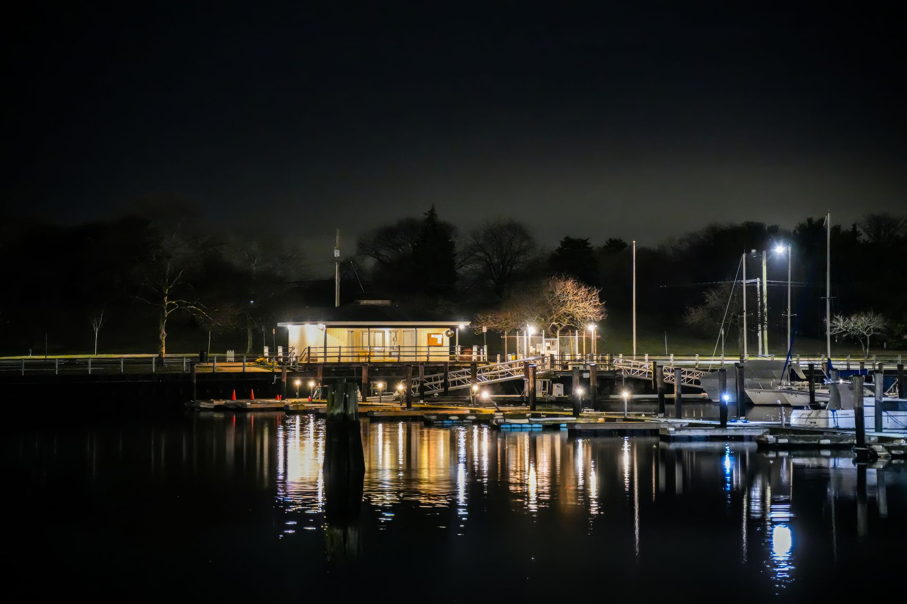
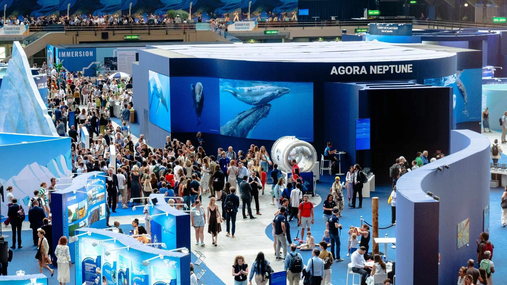
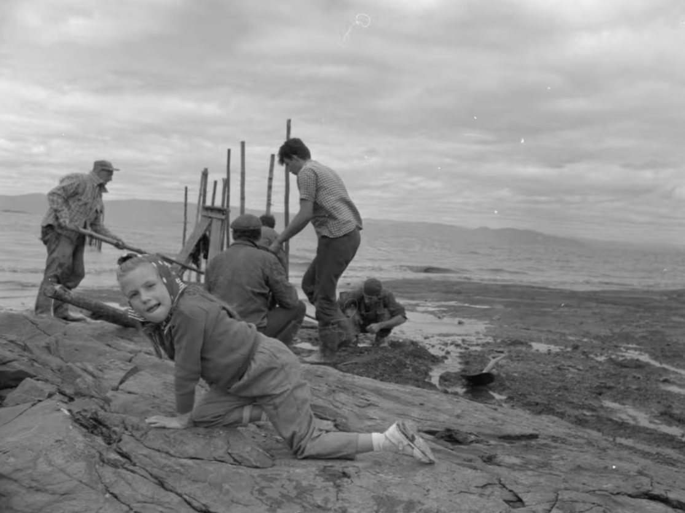
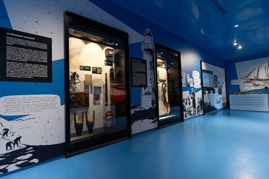
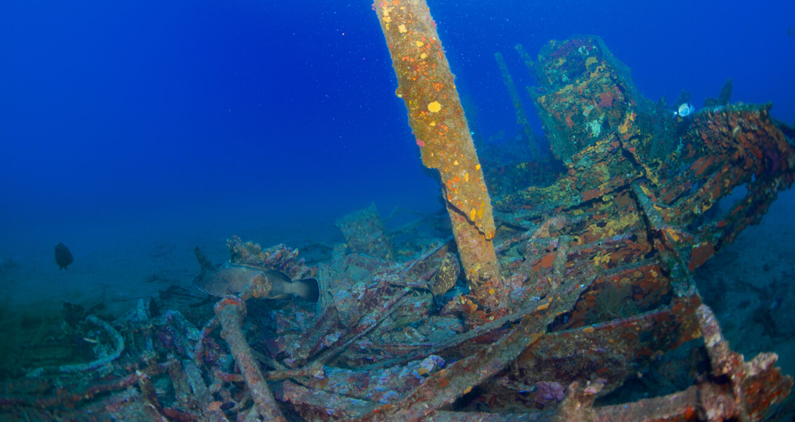

Nuit des pêcheurs
Chaque été, une soirée unique avec contes traditionnels, dégustations de produits de la mer et animations sur le quai.
Situé dans un ancien entrepôt maritime, le musée explore les traditions de pêche en Gaspésie, les savoirs autochtones liés à la mer, les défis de la pêche moderne et l'impact des changements climatiques sur le golfe du Saint-Laurent.
Planifier votre visite
Chaque été, une soirée unique avec contes traditionnels, dégustations de produits de la mer et animations sur le quai.

Un week-end festif réunissant conférences, films documentaires, animations pour enfants et dégustations, célébrant le patrimoine maritime gaspésien.

Un parcours immersif sur les savoirs autochtones liés à la pêche, à la navigation et au respect des cycles marins, présenté en collaboration avec des communautés locales.
En savoir plus
Une exposition interactive sur les écosystèmes du Saint-Laurent : baleines, homards, morues et plancton, et les menaces posées par les changements climatiques.
En savoir plus
Plongez dans l'histoire maritime grâce à des maquettes de navires, des cartes anciennes et des artefacts récupérés des fonds du golfe.
En savoir plusBlague de poisson